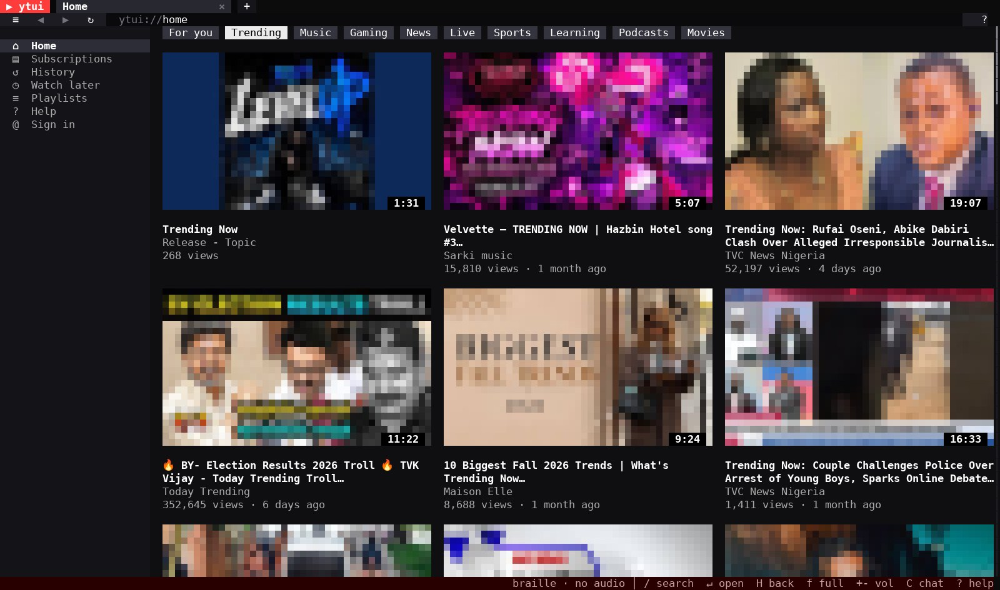
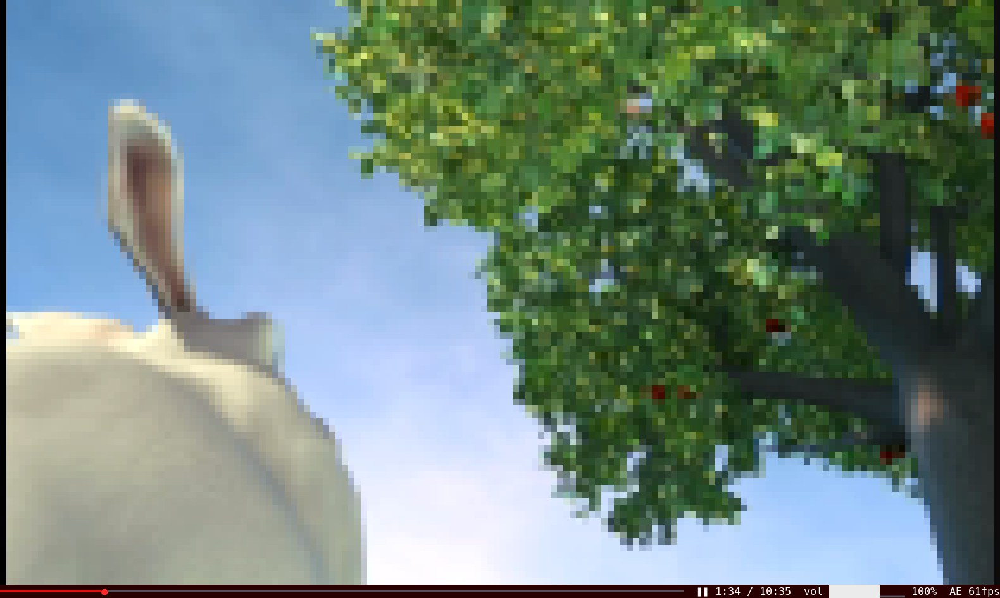
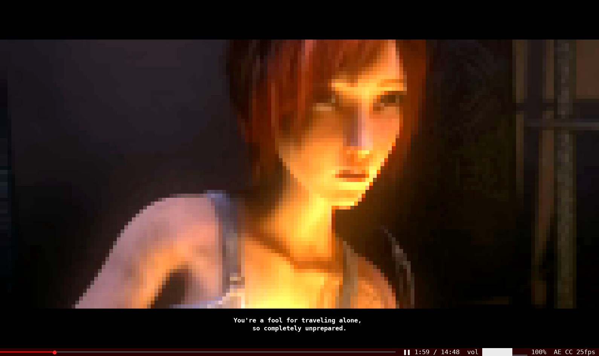

Watch YouTube in the terminal
ytui is a free, open-source YouTube client for your terminal. You can search, browse Home and Trending, and play videos as 24-bit colour half blocks at up to 60 fps. It runs on Windows, Linux and macOS, with no browser and no API key.

Install
Download the package for your system from the latest release, then install the tools ytui plays through. The step-by-step guide to watching YouTube in the terminal walks through each system, SSH and tmux.
Windows 10 and 11
Unzip and run ytui.exe in Windows Terminal.
winget install yt-dlp.yt-dlp Gyan.FFmpeg DenoLand.DenomacOS (Apple Silicon)
Extract the archive and run ytui from your terminal.
brew install yt-dlp ffmpeg denoLinux (x86_64)
Install yt-dlp, ffmpeg, and Node.js 22+ or Deno with your package manager. Or build from source:
cargo build --releaseVideo in the terminal
Each cell is a truecolour half block: two pixels, one above the other. ytui sends only the cells that changed and sizes each frame to what your terminal can keep up with, so fast motion gets slightly coarser instead of dropping frames. How it works.


YouTube's layout, in a terminal
- Home, Trending and categories
- Music, Gaming, News, Live, Sports, Learning, Podcasts and Movies, as a thumbnail grid you can click.
- Search, channels and playlists
- Press / to search or paste a URL. Open channels, playlists, comments and live chat.
- 60 fps playback through ffmpeg
- Streams up to 720p by default, the lowest height YouTube serves at 60 fps.
- Captions
- Press S for captions in your system language, then again to go through the other tracks. ytui draws them in a black box over the video, and your language choice is remembered for later videos.
- Optional Google sign-in
- See your recommendations, subscriptions and playlists, and like and comment. Signing in also keeps videos playing when YouTube asks you to "confirm you're not a bot".
- Works over SSH and in tmux
- ytui runs in any truecolour terminal. Inside tmux without truecolour, it tells you the one line to add to
~/.tmux.conf.
Keys you'll use most
| / | Search or open a URL |
|---|---|
| Arrows, Enter | Move and open |
| space f | Pause, fullscreen |
| , . and 0–9 | Seek 10 seconds, or jump to a point |
| + - M | Volume up, down, mute |
| S E | Captions, auto-exposure |
| ? q | Help, quit |
Questions
How do I watch YouTube in the terminal?
Download ytui from the releases page, install yt-dlp and ffmpeg, and run ytui. It opens YouTube's Home page in your terminal. Press / to search and Enter to play a video. You can also start with a search, like ytui lofi hip hop, or with a video URL.
Does ytui need a YouTube account or API key?
No. Searching, browsing and watching work signed out, with no API key. Signing in with Google is optional. It adds your recommendations, subscriptions, playlists, likes and comments.
Which terminals does ytui work in?
Any terminal with 24-bit colour, including Windows Terminal. Inside tmux, add set -as terminal-features ',xterm*:RGB' to ~/.tmux.conf so tmux passes the colours through.
Does it work over SSH?
Yes. ytui works in any truecolour terminal, so you can watch over SSH. Audio is off by default over SSH; choose an output with --audio. See watching YouTube over SSH.
Is there a YouTube TUI for Windows?
Yes. ytui runs natively on Windows 10 and 11 in Windows Terminal. Install yt-dlp and ffmpeg, unzip the download and run ytui.exe.
How is ytui different from ytfzf or youtube-tui?
ytfzf and youtube-tui help you find a video in the terminal, then usually hand it to mpv in a separate window. ytui plays the video inside the terminal itself, as 24-bit colour half blocks, in a YouTube-style interface with Home, channels, comments and live chat. See terminal YouTube clients compared.
Is ytui free?
Yes. ytui is free and open source under the MIT licence.